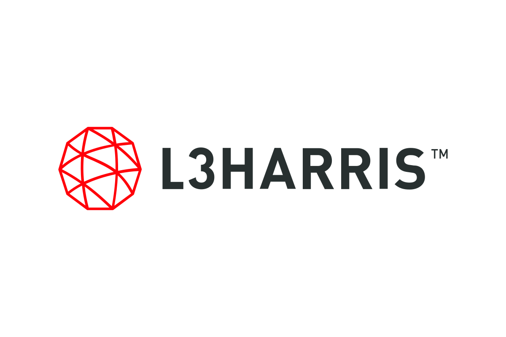

iCAT Lab · Dept. of Electrical & Computer Engineering · University of Central Florida
Building scalable, efficient, and adaptive computing infrastructure for AI — from silicon to algorithms.
Rethinking how intelligence is computed, moved, and built into silicon.
About
The lab
Our mission is to build better computing infrastructure—more scalable, adaptable, and energy-efficient—for emerging AI and scientific applications. We rethink the full computing stack, from theory and algorithms to architecture, RTL, and physical design, turning foundational ideas into practical systems. Equally important, we are committed to providing students with rigorous, hands-on education and research training that prepares them to lead the next generation of computing innovation.
Research Support
Our sponsors
We gratefully acknowledge the agencies, institutions, and industry partners that support our research and students.

Join iCAT Lab
Graduate research and teaching assistantships are available for prospective Ph.D. students interested in sparse computing, efficient AI architectures, and open chip-design infrastructure.
See how to apply →